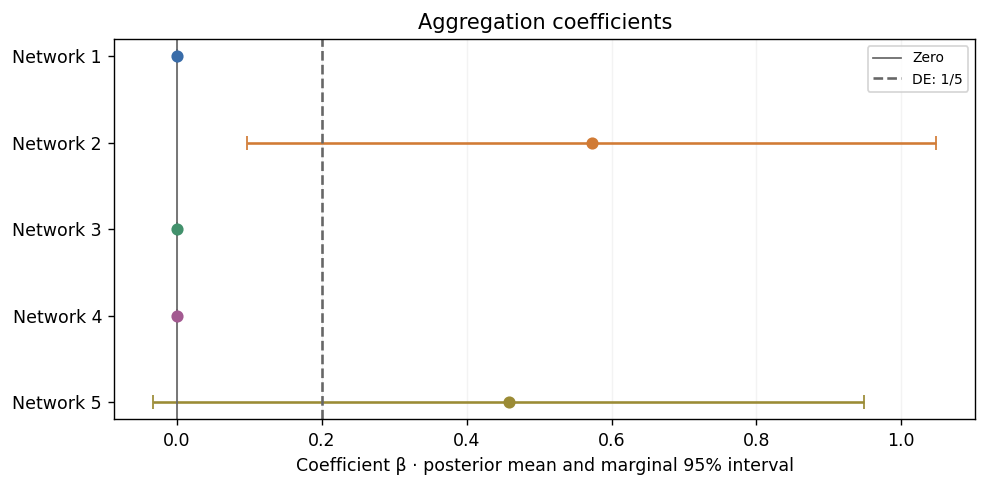
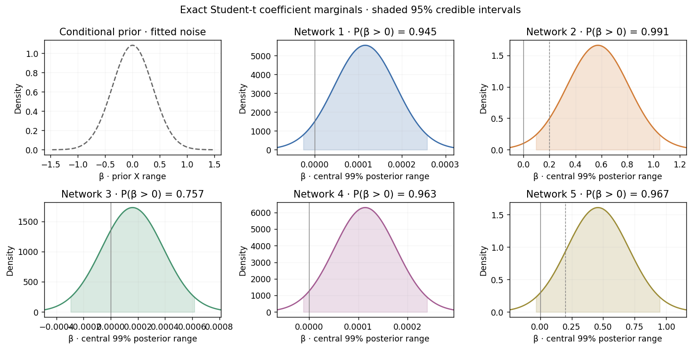
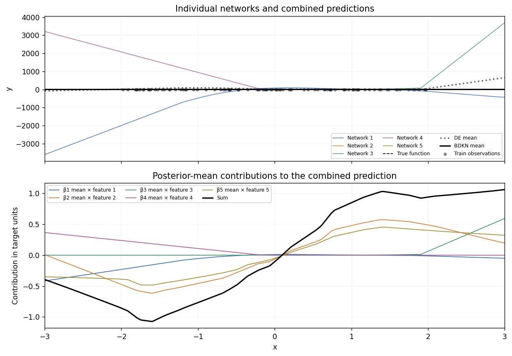
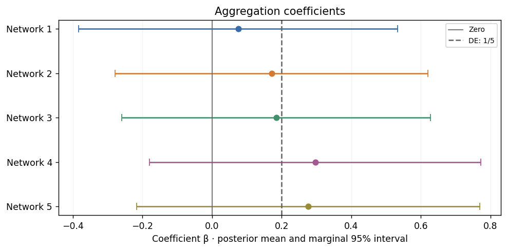
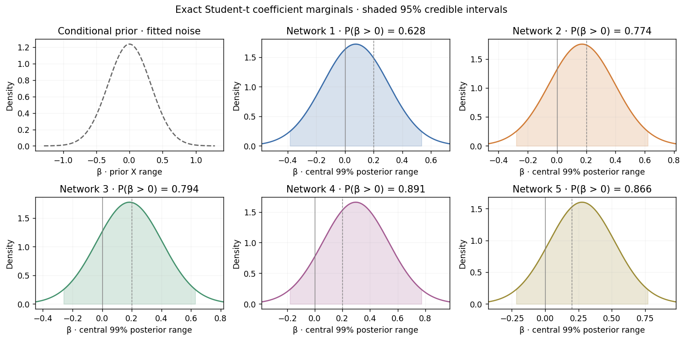
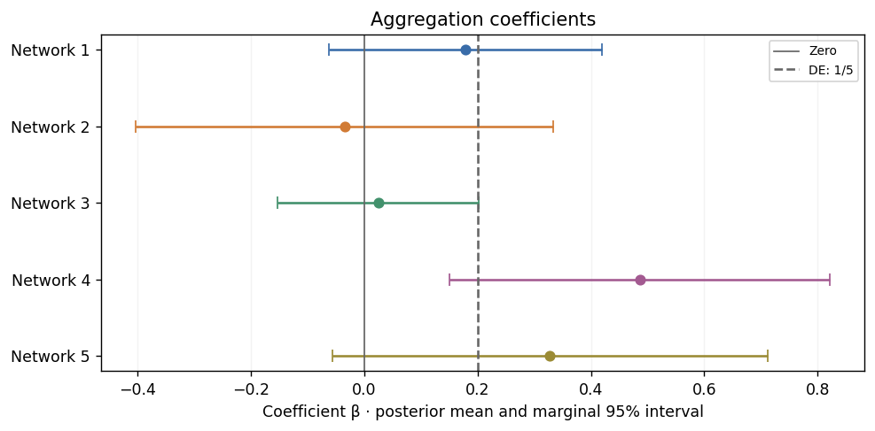
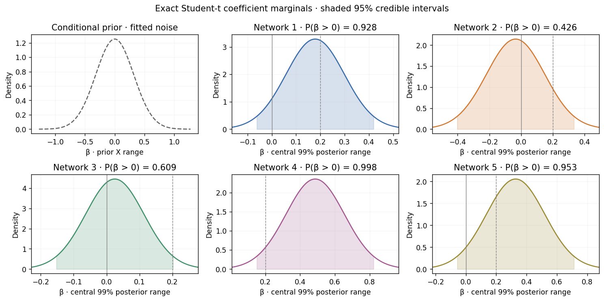
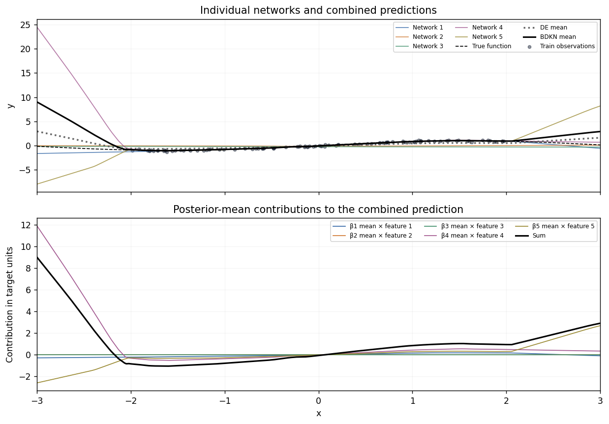

Regression comparison
Download resultsAggregation weights
Coefficients can be negative and need not sum to one. Intervals describe coefficient uncertainty; the dashed reference is DE’s fixed 1/H weight.
BDKN


Each density panel uses its own X range for readability; coefficient intervals above share a common axis. Prior reference conditions on fitted noise. Contribution shares use held-out inputs; test targets are used only for scoring.
| Network | β mean | 95% low | 95% high | P(β > 0) | Contribution share | Test RMSE | Test NLL |
|---|---|---|---|---|---|---|---|
| 1 | 0.15904 | -0.40041 | 0.71849 | 0.71299 | 0.15609 | 0.15863 | 0.26733 |
| 2 | 0.10348 | -0.42784 | 0.63481 | 0.64999 | 0.10236 | 0.16842 | 0.62251 |
| 3 | 0.29566 | -0.28358 | 0.87490 | 0.84317 | 0.28899 | 0.17476 | 2.61466 |
| 4 | 0.30206 | -0.08629 | 0.69041 | 0.93702 | 0.30991 | 0.20717 | 1.26128 |
| 5 | 0.14872 | -0.40583 | 0.70327 | 0.70207 | 0.14264 | 0.15734 | 0.32964 |
Functional repulsion · BDKN



Each density panel uses its own X range for readability; coefficient intervals above share a common axis. Prior reference conditions on fitted noise. Contribution shares use held-out inputs; test targets are used only for scoring.
| Network | β mean | 95% low | 95% high | P(β > 0) | Contribution share | Test RMSE | Test NLL |
|---|---|---|---|---|---|---|---|
| 1 | 0.00012 | -0.00003 | 0.00026 | 0.94539 | 0.08979 | 1232.47764 | 19.08544 |
| 2 | 0.57247 | 0.09673 | 1.04821 | 0.99058 | 0.39799 | 0.13421 | -0.05068 |
| 3 | 0.00016 | -0.00030 | 0.00062 | 0.75699 | 0.06349 | 925.18462 | 96.42871 |
| 4 | 0.00011 | -0.00001 | 0.00024 | 0.96305 | 0.08856 | 1230.99719 | 887.84022 |
| 5 | 0.45805 | -0.03223 | 0.94832 | 0.96662 | 0.36018 | 0.19286 | 0.92869 |
Weight repulsion · BDKN



Each density panel uses its own X range for readability; coefficient intervals above share a common axis. Prior reference conditions on fitted noise. Contribution shares use held-out inputs; test targets are used only for scoring.
| Network | β mean | 95% low | 95% high | P(β > 0) | Contribution share | Test RMSE | Test NLL |
|---|---|---|---|---|---|---|---|
| 1 | 0.07531 | -0.38282 | 0.53345 | 0.62750 | 0.21632 | 37.43021 | 7.82361 |
| 2 | 0.17101 | -0.27807 | 0.62009 | 0.77414 | 0.36506 | 32.82891 | 254794514.90121 |
| 3 | 0.18440 | -0.25944 | 0.62824 | 0.79413 | 0.21934 | 12.86519 | 6453330.54383 |
| 4 | 0.29679 | -0.17915 | 0.77273 | 0.89054 | 0.07982 | 2.02361 | 269311.10782 |
| 5 | 0.27634 | -0.21633 | 0.76901 | 0.86577 | 0.11946 | 3.25528 | 333315.89022 |
First-order repulsion · BDKN



Each density panel uses its own X range for readability; coefficient intervals above share a common axis. Prior reference conditions on fitted noise. Contribution shares use held-out inputs; test targets are used only for scoring.
| Network | β mean | 95% low | 95% high | P(β > 0) | Contribution share | Test RMSE | Test NLL |
|---|---|---|---|---|---|---|---|
| 1 | 0.17875 | -0.06162 | 0.41912 | 0.92837 | 0.07200 | 0.41691 | 1.26872 |
| 2 | -0.03483 | -0.40270 | 0.33304 | 0.42570 | 0.00118 | 0.72394 | 1.22213 |
| 3 | 0.02474 | -0.15238 | 0.20186 | 0.60887 | 0.00286 | 0.82368 | 1.19699 |
| 4 | 0.48652 | 0.15106 | 0.82197 | 0.99755 | 0.59344 | 5.43388 | 6.97358 |
| 5 | 0.32761 | -0.05628 | 0.71149 | 0.95323 | 0.33052 | 2.60946 | 2813.28317 |